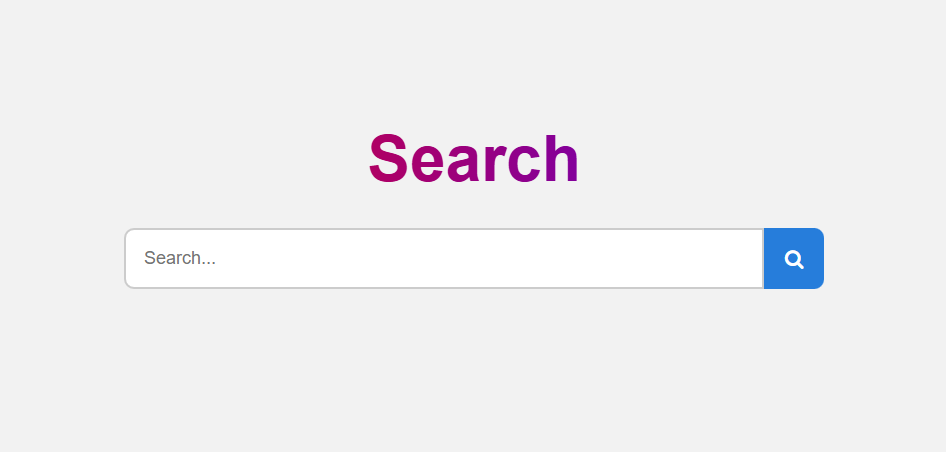

Web Crawler + Search Engine
Python Project | Web Scraping and Search Algorithm
View on GitHubIntroduction
The Web Crawler + Search Engine is a Python-based project that automatically crawls the web, starting from the University of California, Irvine (uci.edu), and follows links to index pages. This program is designed to gather web data, build an index, and allow users to search for specific content across the collected pages.
Goal
This project utilizes a depth-first search strategy to crawl the web starting from a specified URL (uci.edu). The crawler collects page content and creates a simple search engine by indexing the text on the pages. The search functionality is based on keyword matching, allowing users to search for specific terms across the indexed pages, with relevant results displayed in order of relevance.
Key Features
- Automated web crawling using a depth-first search algorithm
- Text indexing for efficient keyword-based searching
- Simple user interface for searching indexed pages
- Handles large volumes of pages without significant performance degradation
- Can be scaled to crawl additional domains beyond uci.edu
Technologies Used
Python, NLTK, BeautifulSoup, Requests, Regular Expressions, Flask (for search interface)
Gallery
Home Page
Results page